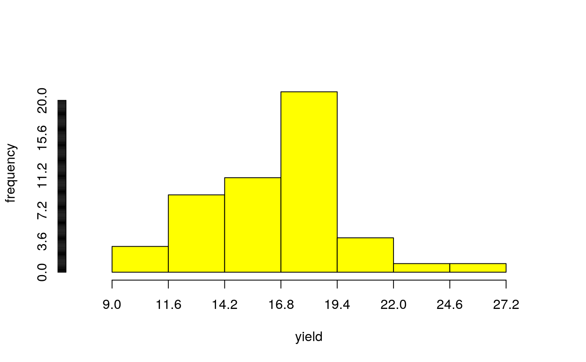
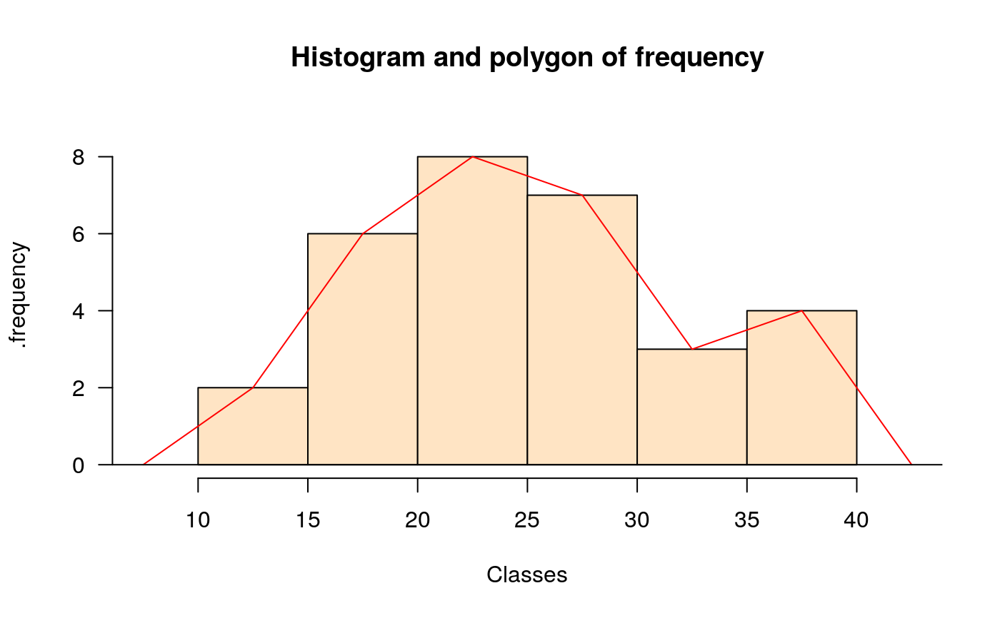
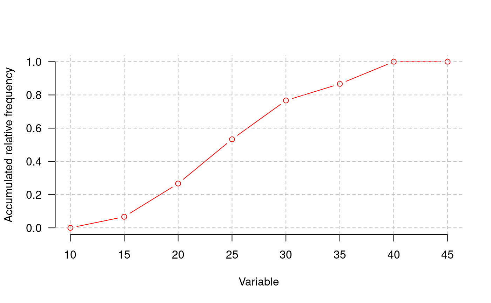
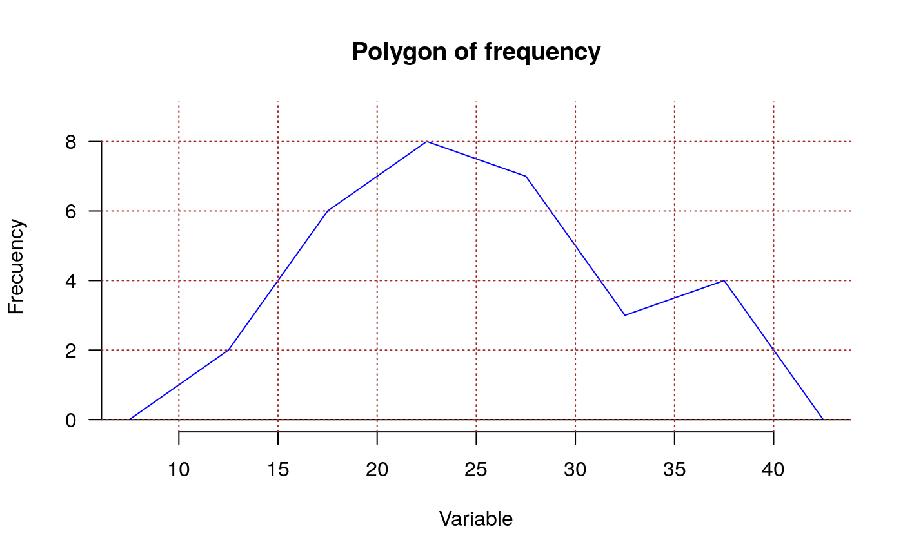

In many situations it has intervals of class defined with its respective frequencies. By means of this function, the graphic of frequency is obtained and it is possible to superpose the normal distribution, polygon of frequency, Ojiva and to construct the table of complete frequency.
# S3 method for graph.freq plot( x, breaks = NULL, counts = NULL, frequency = 1, plot = TRUE, nclass = NULL, xlab = "", ylab = "", axes = "", las = 1, ... )
Arguments
| x | a vector of values, a object hist(), graphFreq() |
|---|---|
| breaks | a vector giving the breakpoints between histogram cells |
| counts | frequency and x is class intervals |
| frequency | 1=counts, 2=relative, 3=density |
| plot | logic |
| nclass | number of classes |
| xlab | x labels |
| ylab | y labels |
| axes | TRUE or FALSE |
| las | numeric in 0,1,2,3; the style of axis labels. see plot() |
| ... | other parameters of plot |
Value
a vector giving the breakpoints between histogram cells
frequency and x is class intervals
center point in class
Relative frequency, height
Density frequency, height
See also
Examples
library(agricolae) data(genxenv) yield <- subset(genxenv$YLD,genxenv$ENV==2) yield <- round(yield,1) h<- graph.freq(yield,axes=FALSE, frequency=1, ylab="frequency",col="yellow")# To reproduce histogram. h1 <- plot(h, col="blue", frequency=2,border="red", density=8,axes=FALSE, xlab="YIELD",ylab="relative")# summary, only frecuency limits <-seq(10,40,5) frequencies <-c(2,6,8,7,3,4) #startgraph h<-graph.freq(limits,counts=frequencies,col="bisque",xlab="Classes")#> $variance #> [1] 53.01724 #> #> $mean #> [1] 25 #> #> $median #> [1] 24.375 #> #> $mode #> [- -] mode #> [1,] 20 25 23.33333 #>#> Lower Upper Main Frequency Percentage CF CPF #> 1 10 15 12.5 2 6.7 2 6.7 #> 2 15 20 17.5 6 20.0 8 26.7 #> 3 20 25 22.5 8 26.7 16 53.3 #> 4 25 30 27.5 7 23.3 23 76.7 #> 5 30 35 32.5 3 10.0 26 86.7 #> 6 35 40 37.5 4 13.3 30 100.0#startgraph # ogive ogive.freq(h,col="red",type="b",ylab="Accumulated relative frequency", xlab="Variable")#> Variable RCF #> 1 10 0.0000 #> 2 15 0.0667 #> 3 20 0.2667 #> 4 25 0.5333 #> 5 30 0.7667 #> 6 35 0.8667 #> 7 40 1.0000 #> 8 45 1.0000# only frequency polygon h<-graph.freq(limits,counts=frequencies,border=FALSE,col=NULL,xlab=" ",ylab="")#endgraph # Draw curve for Histogram h<- graph.freq(yield,axes=FALSE, frequency=3, ylab="f(yield)",col="yellow")title("Draw curve for Histogram")